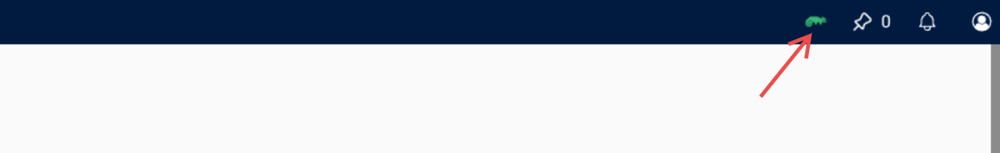
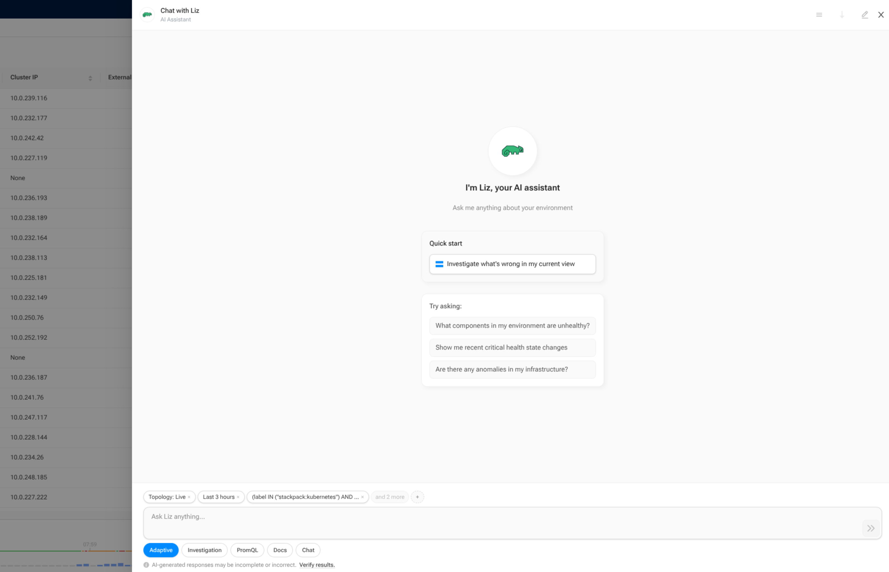

Use AI Assistant in the UI
AI Assistant helps you investigate issues in SUSE® Observability without leaving the product UI. It opens as a drawer and can use the context of your current view to answer questions, explain findings, and guide the next troubleshooting steps.
|
Using AI Assistant generates costs because it invokes external AI models. Larger investigations can take several minutes and may generate significant costs. |
Prerequisites
Make sure that:
-
AI Assistant is enabled for your installation. See AI Assistant.
-
Your user has the
execute-aipermission. See Permissions.
Open AI Assistant
You can open AI Assistant from the top navigation bar.

AI Assistant opens as a drawer on the right side of the UI.

|
If AI Assistant is not enabled, the AI Assistant entry points are hidden from the UI. |
Start a conversation
When you open AI Assistant, you can start in several ways:
-
type a question in the input field
-
select one of the suggested prompts
-
use the shortcut to investigate the current view
The initial screen is designed for quick troubleshooting and investigation flows. After the first message is sent, the drawer keeps the session open so you can continue with follow-up questions.
Choose an agent
Before sending a question, you can choose which agent should handle it.
The available agents are:
-
Adaptive- starts as a general chat and automatically routes the conversation to the best specialist when needed -
Chat- best for quick questions, light data lookups, and simple follow-up questions -
Investigation- best for deeper root cause analysis across multiple observability domains -
PromQL- best for metrics exploration, PromQL query building, and PromQL troubleshooting -
Docs- best for product questions, feature explanations, configuration guidance, and documentation lookups
In most cases, Adaptive is the best starting point because it can keep simple conversations in chat mode and hand over to a specialist when the question requires deeper analysis.
|
Some agent types may be unavailable in the UI. When that happens, the selector shows them as unavailable. |
Use the current UI context
AI Assistant can include context from the view you are currently looking at. Depending on where you open it, this can include information such as:
-
the selected component
-
filters and scope
-
time range or time-travel state
-
the current perspective or query
-
markers and other investigation context
This context is shown as chips in the drawer.
You can:
-
remove individual context chips
-
add context back again
-
add your own free-text note as extra context
This lets you decide how much of the current screen state is sent with your question.
Continue with follow-up questions
After the first answer, you can continue in the same conversation by sending follow-up questions.
This keeps the existing conversation history and investigation context together in a single session.
Review answers and execution details
AI Assistant responses can include more than just plain text. In the drawer, you can review:
-
the assistant response
-
reasoning details behind the answer
-
tool calls made during the investigation
-
sources and related links
-
actions that navigate you to relevant UI pages
Tool execution details help you understand what AI Assistant checked while generating the answer.
|
AI-generated responses may be incomplete or incorrect. Always verify the results before making changes. |
Use history
AI Assistant keeps a history of sessions.
From the history view, you can:
-
reopen earlier sessions
-
start a new session
-
rename finished sessions
-
delete finished sessions
SUSE® Observability also provides an AI Sessions page where you can review existing sessions and reopen them in the drawer.
Use links and actions in responses
Some responses include source links or suggested actions.
Depending on the result, these can:
-
open related documentation or external references
-
navigate to a component
-
open relevant highlights, metrics, or traces views
This makes it easier to move from an AI answer into deeper investigation in the product.
Stop, refresh, or retry
While AI Assistant is generating a response, you can stop the current response.
If a request fails or the status needs to be checked again, the drawer can also show options to refresh or retry.
Stopping the current response does not remove the session. You can continue the conversation afterwards.
Best practices
To get the best results:
-
ask focused questions about the current issue
-
keep only relevant context chips
-
verify answers against the underlying topology, metrics, logs, traces, and monitors
-
do not share secrets, credentials, API keys, personal data, or other confidential information in prompts